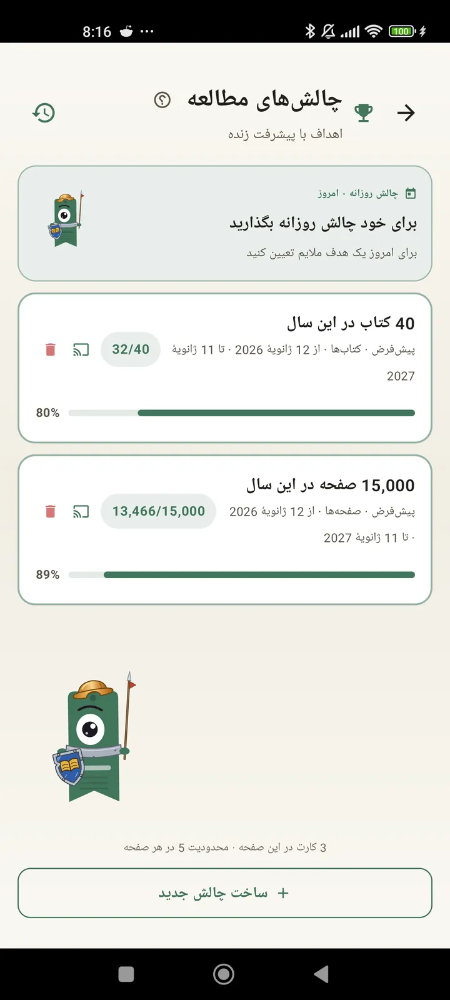

خودتان را بهعنوان خواننده بهتر بشناسید
چالشها، بینگوها، ویجتها و قابلیتهای بیشتر تا بیشترین بهره را از مطالعهتان ببرید. تازه در 3.7: ویجتهای چالش و بینگو.

چالشهای مطالعه
برای صفحهها، رشتههای پیاپی یا ژانرها هدف بگذارید. تا 15 چالش فعال رایگان، نامحدود با Pro. بهعلاوه یک چالش روزانه قابل تنظیم که جزو این سقف حساب نمیشود.

چالش روزانه
هر روز یک هدف تازه. چالش را پیش از نیمهشب کامل کنید تا رشته پیاپیتان ادامه پیدا کند.

بینگو مطالعه
هر ماه دو بینگوی تازه با خانههای موضوعی. ردیفها، ستونها یا کل کارت را کامل کنید.

خلاصه هفتگی
هر دوشنبه، نگاهی به هفتهتان: صفحههای خواندهشده، زمان کل، رشته پیاپی و مقایسه با هفته قبل.

خلاصه ماهانه
وقتی ماه تمام میشود، Lecturameter آن را خلاصه میکند: صفحهها، زمان، کتابهای تمامشده، سرعت روزبهروزتان و کتاب ماهتان.

ویجت بینگو Pro
کارت بینگوی این ماه، همیشه جلوی چشم، با خانههایی که کامل کردهاید و خطهایی که ساختهاید.

ویجت کتاب رایگان
کتابی را که میخوانید مستقیم روی صفحه اصلی ببینید: جلد، عنوان، نویسنده، صفحهها و درصد پیشرفت، همیشه بهروز. اندازهاش قابل تغییر است تا هر جا بخواهید جا شود.
جدی میگم رفیق، این برنامه مثل درمانه. از روزی یکی دو صفحه رسیدم به روزی حدود 20 صفحه و هنوز دارم بهتر میشم.نظر یک کاربر، ارسالشده با ایمیل

مقایسه ماهانه Pro
نگاهی سریع به ماههای اخیرتان بدون باز کردن برنامه. ستونهایی برای صفحههای هر ماه با ماه جاری برجسته، تا با یک نگاه بفهمید این ماه بهتر از ماه قبل پیش میروید یا بدتر.

ویجت چالشها Pro
چالشهای فعال و پیشرفتشان روی صفحه اصلی. از صفحه چالشها انتخاب کنید کدامها نمایش داده شوند.